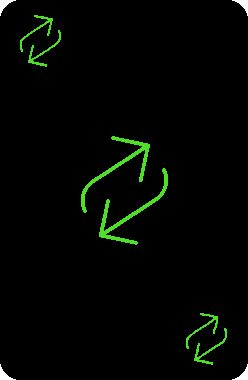
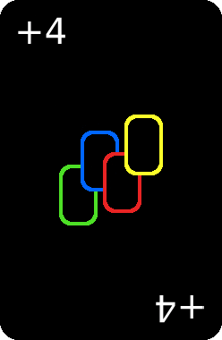

Paramètres

Le but du jeu est simple ! Débarassez-vous de toutes vos cartes.
Pour ce faire il vous suffira de déposé vos cartes sur le paquet de carte. Pour déposer une carte il faut que celle-ci soit de la même couleur ou de la même valeur que la dernière carte posé sur le paquet
Attention aux petit coquin ! En effet, les plus malicieux d'entre vous pourrons bloquer ou donner des cartes à d'autres joueurs
Le +2 vous permet de donner deux cartes à la personne jouant après vous sauf si celle-ci remet un +2 par dessus, la personne suivante devra donc piocher 4 cartes et ainsi de suite
 Le jeu se joue dans le sens des aiguilles de la montre. Le changement de sens bloque donc la personne etant sensé jouer apres vous. Le jeu passe donc dans le sens inverse des aiguilles de la montre.
Le passement de tour vous permet de bloquer la personne jouant après vous
Le changement de couleur vous permet de choisir la couleur danslaquel vous voulez continuez le jeu. La personne suivante sera donc obligé de jouer dans cette couleur ou de remettre un changement de couleur ou un +4.
 Le +4 vous permet de choisir la couleur danslaquel vous voulez continuez le jeu. De plus, la personne suivante sera obligé de prendre 4 cartes ou de remettre un +4 par dessus, la personne suivante devra donc piocher 8 cartes et ainsi de suite